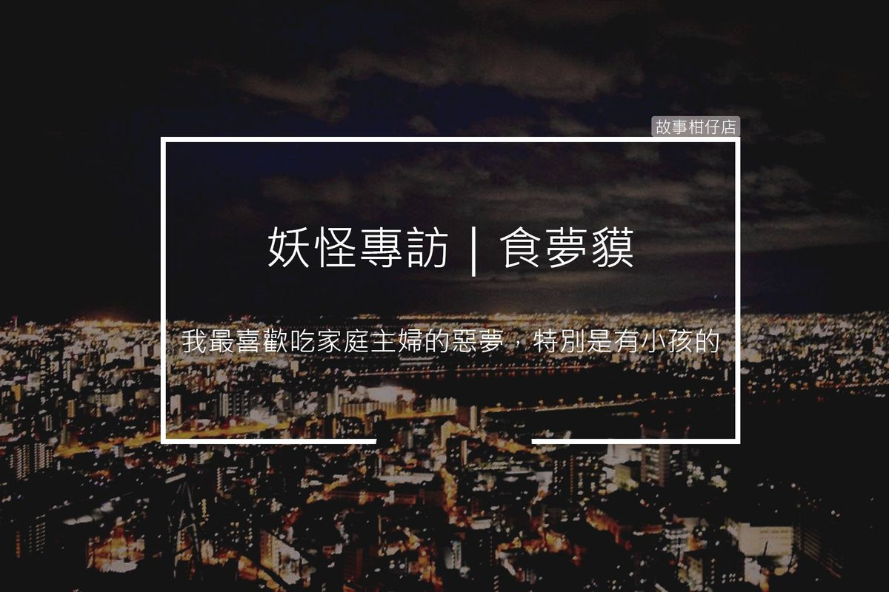

妖怪專訪/食夢貘

採訪人物：食夢貘來台第三代
採訪人：老闆
採訪時間：民國107年，7月某日夜半1點
採訪地點：台北信義區某公寓臥房
故事回顧：
老闆：為什麼約這個地方受訪呢？(小聲)
食夢貘：你會在地上找鯉魚嗎？不會嘛，夜半有人睡覺的地方，我們出現不是正剛好，白天要睡覺沒時間理你，自己要來訪的別抱怨。而且你不是要求要有趣一點的內容，帶你到我們吃飯現場還不夠有趣？
而且這是我兩天就會來一次的「餐廳」，你看看這個小女孩，手上一個青一個黑，被欺負的這麼慘，晚上都還會發惡夢被爸爸打、媽媽罵，我來只是讓她至少睡覺時好過點，不用白天被打夢裡還繼續被嚇。
別看她房間好像什麼都有，乾乾淨淨，她那個繼父真他X王八蛋啊，算了算了，說起來就有氣，你們人都說妖怪討厭、遊魂可怕，我吃了這麼多惡夢，大概有八成夢到的都跟人欺負人有關，你說說到底誰恐怖？
老闆：吃夢的具體過程是怎樣的呢？
食夢貘：一般我們分成三個步驟：
看天象選餐廳找對象
在夜晚觀察不同住宅天空的顏色，只要偏暗紅的那種，就是作惡夢比例高的，當然有時候我懶，就直接隨便亂跑。
不過說實在的，你們現在的人也太容易發惡夢了，生活壓力這麼大？選定餐廳之後找到其中熟睡的人，就可以進行下一步了。
拿出吸夢管對準天靈蓋等發夢
這根吸夢管，你可是古今中外第一個看的，象牙製作，雕刻精美，出自某位國寶級妖怪工藝師之手，不過你別問我他是誰，我們都簽了保密協定，洩密可是會被發懸賞追殺的暗花。
你能想像被金魅追殺嗎？她們最常接這種賺錢的case，千萬不要小看長年打掃的人，她們力氣的大小跟折磨你的方法，絕對超乎想像。
吃食同時體驗
在惡夢對象剛要開始發夢的同時，我們就用力給他吸下去，那一瞬間看起來只有幾秒，但其實我們都必須經歷他們所做的惡夢，從頭到尾，就像這個小女孩，唉，還是不要說好了，說了你會怕。
我才活了50年，光吃這些惡夢就讓我老了幾百歲。什麼？你說這樣為什麼要吃？因為我們天性最愛看恐怖片，那種被驚嚇、血腥、獵奇的快感，你怎麼哪裡找得到可以吃又可以看的4D享受。
老闆：哪種類型的食物(夢)你喜歡？哪種討厭？
食夢貘：我最討厭小資OL的惡夢，先說清楚我沒有性別歧視，只是剛好我吃到的OL夢都讓我拉肚子，他們在夢中仍然很壓抑，一點都沒有尖叫哭鬧等讓人滿意的情節，有時候不符合我們惡夢的標準，不小心吃到還會拉肚子。
我最喜歡吃家庭主婦的惡夢，特別是有小孩的那種，白天笑笑的，晚上超多報復情節在夢裡搬演，搞到自己都很害怕，那些夢比咒怨還驚悚，比厲嬰房還可怕，下次我再約你去一戶有錢人家，裡面那個媽媽的夢真的超精彩，吸夢管借你你可以試試。
老闆：謝謝，老闆我不喜歡看鬼片。最後一個問題，吃夢會有消化不良的問題嗎？
食夢貘：有阿，你們人不也會吃撐脹氣？像我爸每次都吃超量，搞到他自己睡覺都會做惡夢、自己驚呼連連，不過，我上次不小心撞見爺爺都趁這時候，偷偷吃爸爸那些溢出來的惡夢，難怪最近爺爺都不跟我們出門吃飯了。
(小女孩開始發冷汗，喉嚨隱隱發出咿啞聲)
好了好了你讓開，我要準備吃飯看電影了。